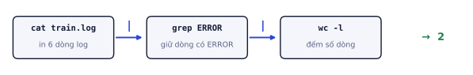
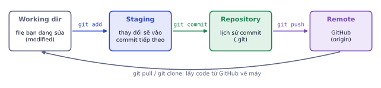
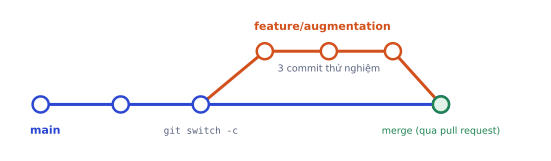

Code ML không chỉ chạy trong notebook. Bạn cần điều khiển máy chủ GPU (terminal), lưu lịch sử thay đổi (Git), chia sẻ và nhận góp ý (GitHub), và train trên GPU miễn phí (Colab). Nhà tuyển dụng nhìn GitHub của bạn trước khi đọc CV, nên bài này cũng là bước đầu xây hồ sơ.
Terminal Linux đủ dùng
Vì sao cần học
Máy GPU thuê trên cloud (RunPod, Lambda, máy chủ trường) không có giao diện đồ họa: bạn chỉ có một cửa sổ terminal qua SSH. Biết khoảng 20 lệnh là đủ để cài môi trường, chạy train, theo dõi log và dọn ổ đĩa mà không phải tải file về máy.
Cấu trúc thư mục và đường dẫn
Linux có một cây thư mục duy nhất bắt đầu từ /. Thư mục nhà của bạn là ~ (ví dụ /home/truong). Đường dẫn tuyệt đối bắt đầu bằng /; đường dẫn tương đối tính từ thư mục hiện tại, với . là "ở đây" và .. là "thư mục cha".
pwd# đang ở đâu: /home/truong/project
ls-lh# liệt kê, -l chi tiết, -h dung lượng dễ đọc (12K, 3.4G)cddata/raw# vào thư mục con (tương đối)cd..# lên một cấpcd~# về thư mục nhà
mkdir-pruns/exp1# tạo thư mục, -p tạo luôn thư mục cha nếu chưa có
cpa.pyb.py;mvb.pysrc/;rmold.log# chép, di chuyển/đổi tên, xóa
rm-rtmp/# xóa cả thư mục (không có thùng rác, cẩn thận)
Đọc và tìm trong file
catconfig.yaml# in cả file
head-n20train.csv# 20 dòng đầu: xem nhanh cấu trúc CSV
tail-n50train.log# 50 dòng cuối
tail-ftrain.log# theo dõi log đang được ghi (Ctrl+C để thoát)
grep"val_acc"train.log# chỉ in dòng có chuỗi "val_acc"
grep-cERRORtrain.log# đếm số dòng khớp
grep-vERRORtrain.log# in các dòng KHÔNG khớp
wc-ltrain.csv# đếm số dòng (số mẫu + 1 dòng tiêu đề)
Pipe: ghép lệnh nhỏ thành công cụ lớn
Dấu | đưa đầu ra của lệnh trước làm đầu vào của lệnh sau. Mỗi lệnh làm một việc nhỏ; ghép lại giải được bài khó.

cat in nội dung, grep lọc dòng có ERROR, wc -l đếm: kết quả là số dòng lỗi.
pythontrain.py>train.log# ghi đầu ra vào file (ghi đè)
pythontrain.py>>train.log# ghi nối vào cuối file
pythontrain.py>train.log2>&1# gộp cả lỗi (stderr, kênh 2) vào cùng file
Theo dõi máy và chạy lâu
nvidia-smi# có GPU nào, đang dùng bao nhiêu VRAM, tiến trình nào
watch-n2nvidia-smi# cập nhật mỗi 2 giây
df-h# ổ đĩa còn trống bao nhiêu
du-shdata/*|sort-h# dung lượng từng thư mục, sắp tăng dần
htop# CPU, RAM, tiến trình (q để thoát)
nohuppythontrain.py>train.log2>&1&# chạy nền, đóng terminal vẫn chạy
tmuxnew-strain# phiên terminal "sống" kể cả khi mất kết nối SSH
nohup ... & và tmux giải cùng một vấn đề: train mất 10 tiếng nhưng kết nối SSH của bạn đứt sau 1 tiếng. Với tmux, gõ Ctrl+B rồi D để rời phiên, tmux attach -t train để quay lại.
Kết nối và quyền
sshuser@1.2.3.4# đăng nhập máy chủ
scpmodel.ptuser@1.2.3.4:~/models/# chép file lên máy chủ
chmod+xrun.sh&&./run.sh# cho phép chạy script rồi chạyexportCUDA_VISIBLE_DEVICES=0# biến môi trường: chỉ dùng GPU số 0
Lỗi hay gặp
rm -rf không có thùng rác. Một dấu cách sai (rm -rf data / thay vì rm -rf data/) có thể xóa thứ bạn không muốn. Trước khi xóa, chạy ls với cùng đường dẫn để xem đúng những gì sẽ bị xóa. Với dữ liệu quan trọng, luôn có bản sao ở nơi khác.
Tự kiểm tra nhanh
File results.csv có dòng tiêu đề và 1.000 dòng dữ liệu.
Git hoạt động thế nào
Vì sao cần học
Không có Git, bạn sẽ có train_final.py, train_final2.py, train_final_THAT_SU.py và không nhớ cái nào cho accuracy 82%. Git lưu mọi phiên bản, cho biết ai đổi gì khi nào, cho phép quay lại phiên bản cũ, và là cách duy nhất để làm việc nhóm trên cùng một codebase.
Commit là một bức ảnh chụp
Mỗi commit là ảnh chụp toàn bộ dự án tại một thời điểm, kèm lời nhắn, tác giả, thời gian, và một mã định danh (hash) như a3f9c21. Lịch sử dự án là chuỗi các commit nối nhau.
Ba khu vực (và một khu vực từ xa)

Thay đổi đi từ thư mục làm việc vào vùng chuẩn bị (git add), vào lịch sử (git commit), rồi lên GitHub (git push).
Khu vực
Ý nghĩa
Lệnh đưa vào
Working directory
file bạn đang sửa
(sửa file)
Staging area
những thay đổi sẽ vào commit tiếp theo
git add <file>
Repository
lịch sử các commit, nằm trong thư mục .git
git commit -m "..."
Remote
bản sao trên GitHub
git push
Vùng staging tồn tại để bạn chọn những gì vào commit. Bạn sửa 5 file nhưng chỉ 2 file liên quan đến việc "thêm checkpoint" thì chỉ add 2 file đó, commit, rồi xử lý 3 file kia ở commit khác. Lịch sử sẽ dễ đọc và dễ quay lui.
Vòng làm việc hằng ngày
gitinit# tạo repo mới (một lần)
gitstatus# xem file nào đã sửa, đã stage — chạy lệnh này liên tục
gitdiff# xem chi tiết thay đổi chưa stage
gitaddtrain.pyutils.py# stage hai file
gitdiff--staged# xem chính xác những gì sắp được commit
gitcommit-m"Thêm checkpoint và resume cho vòng lặp train"
gitlog--oneline-5# 5 commit gần nhất, mỗi commit một dòng
gitaddconfig.yaml
gitcommit-m"Tăng batch size lên 128"
gitstatus
Commit chỉ chứa 1 file (config.yaml). Ba file kia vẫn ở trạng thái "modified" chưa stage, chờ commit sau. Nếu sau commit bạn lại sửa tiếp train.py, nó cũng hiện là "modified" lần nữa: Git theo dõi thay đổi so với commit gần nhất.
Viết commit message tốt
Một dòng tóm tắt (dưới khoảng 70 ký tự), nói làm gì, nếu cần thì thêm đoạn vì sao:
Kém
Tốt
update
Sửa rò dữ liệu khi chia train/val theo người dùng
fix bug
Chặn NaN khi batch toàn nhãn 0 trong focal loss
final
Thêm script đánh giá trên tập test, ghi kết quả ra JSON
Nhìn lịch sử commit, người khác (và bạn 3 tháng sau) phải hiểu dự án tiến triển thế nào.
Quay lui khi lỡ tay
gitrestoretrain.py# bỏ thay đổi chưa stage, về bản commit gần nhất
gitrestore--stagedtrain.py# bỏ stage (thay đổi vẫn còn trong file)
gitcommit--amend-m"Lời nhắn mới"# sửa commit vừa tạo (chỉ khi chưa push)
gitreverta3f9c21# tạo commit mới đảo ngược commit cũ (an toàn khi đã push)
gitlog-ptrain.py# xem lịch sử thay đổi của một file
Lỗi hay gặp
git add . mọi thứ. Lệnh này stage tất cả, kể cả file dữ liệu 2 GB, checkpoint, thư mục .venv, file .env chứa khóa API. Khi đã commit và push, xóa khỏi lịch sử rất mất công. Luôn có .gitignore trước (mục dưới) và chạy git status trước khi commit.
Branch, merge và pull request
Vì sao cần học
Bạn muốn thử augmentation mới nhưng không chắc nó tốt hơn. Branch cho phép thử trên một "dòng thời gian" riêng: hỏng thì bỏ, tốt thì gộp vào. Pull request là cách các đội làm phần mềm (và đội ML) review code trước khi gộp.

Branch tách ra từ main, có 3 commit thử nghiệm, rồi được merge trở lại qua pull request.
gitswitch-cfeature/augmentation# tạo branch mới và chuyển sang# ... sửa code, commit vài lần ...
gitpush-uoriginfeature/augmentation# đẩy branch lên GitHub lần đầu
gitswitchmain# quay về nhánh chính
gitpull# lấy thay đổi mới nhất từ GitHub
gitmergefeature/augmentation# gộp (hoặc làm qua pull request trên web)
gitbranch-dfeature/augmentation# xóa branch đã gộp
Pull request (PR)
Trên GitHub, bạn mở pull request để đề nghị gộp branch vào main. Trang PR hiển thị toàn bộ thay đổi, cho phép bình luận từng dòng, và chạy kiểm tra tự động (CI, học ở P8). Một PR tốt có:
Tiêu đề rõ như commit message.
Mô tả: thay đổi gì, vì sao, đã kiểm tra thế nào (ví dụ "val acc 81.2% → 83.0%, 3 seed").
Kích thước vừa phải: dưới vài trăm dòng thì người review đọc kỹ được.
Ngay cả khi làm một mình, dùng PR giúp bạn tự đọc lại thay đổi trước khi gộp và để lại dấu vết dễ hiểu trên GitHub.
Xung đột (conflict)
Khi hai branch cùng sửa một dòng, Git không tự quyết được và đánh dấu trong file:
<<<<<<< HEAD
lr = 3e-4
=======
lr = 1e-3
>>>>>>> feature/augmentation
Bạn sửa file giữ lại dòng đúng, xóa các dấu <<<<<<<, =======, >>>>>>>, rồi git add và git commit. Xung đột là chuyện bình thường, không phải lỗi.
Tự kiểm tra nhanh
Bạn đang ở main có 4 commit. Bạn tạo branch exp, commit thêm 3 lần trên exp, rồi quay về main và merge exp (không có commit mới nào trên main trong lúc đó).
.gitignore và bí mật cho dự án ML
Vì sao cần học
Repo ML khác repo web: có dữ liệu hàng GB, checkpoint hàng trăm MB, log thí nghiệm, và khóa API để gọi LLM. Thứ nào trong số đó vào Git là rắc rối: GitHub chặn file trên 100 MB, repo phình to làm clone chậm, và khóa API lộ ra sẽ bị bot quét lấy trong vài phút.
File .gitignore liệt kê những gì Git bỏ qua. Mẫu cho dự án ML:
# môi trường và cache
.venv/
__pycache__/
.ipynb_checkpoints/
# dữ liệu, model, log
data/
checkpoints/
*.pt
*.ckpt
*.safetensors
wandb/
runs/
# bí mật
.env
Một dòng data/ bỏ qua cả thư mục; *.pt bỏ qua mọi file đuôi .pt; dòng bắt đầu bằng # là chú thích; thêm !data/README.md để vẫn giữ lại một file cụ thể.
Trong repo, thêm file .env.example có tên biến nhưng không có giá trị thật, để người khác biết cần đặt biến gì.
Dữ liệu và model lớn để ở đâu
Thứ
Nơi lưu
Dữ liệu công khai
link tải + script tải trong repo (scripts/download_data.py)
Dữ liệu riêng, nhỏ
Google Drive, đọc từ Colab
Model đã train
Hugging Face Hub (có model card)
Phiên bản dữ liệu theo thí nghiệm
DVC (học ở P8)
Ghi nhớ: khóa API đặt trong file .env, đọc bằng os.environ, và .env luôn nằm trong .gitignore. Nếu lỡ push khóa lên GitHub, thu hồi khóa ngay ở trang quản lý của nhà cung cấp; xóa commit thôi là không đủ vì khóa đã bị quét.
Lỗi hay gặp
Thêm .gitignore sau khi đã commit file..gitignore chỉ có tác dụng với file chưa được Git theo dõi. Nếu data/ đã nằm trong một commit, phải gỡ khỏi Git (giữ lại trên máy) bằng git rm -r --cached data/ rồi commit.
GitHub như một hồ sơ
Vì sao cần học
Với vị trí AI Engineer, đặc biệt là việc remote, GitHub là bằng chứng bạn làm được việc. Người tuyển dụng mở 2–3 repo ghim đầu trang, đọc README trong vài chục giây, và quyết định có đọc tiếp không.
Mỗi repo dự án cần một README trả lời được 5 câu hỏi trong 30 giây đầu:
Dự án làm gì? (một câu)
Kết quả thế nào? (bảng số, ảnh hoặc GIF)
Chạy thế nào? (3–5 lệnh copy được)
Cấu trúc code ra sao?
Hạn chế và hướng phát triển?
# Phân loại ảnh CIFAR-10 từ con số 0
CNN tự viết bằng PyTorch, đạt 82.4% trên tập test sau 30 epoch trên GPU T4.
| Model | Tham số | Test acc |
|---|---|---|
| MLP | 1.6M | 52.1% |
| CNN 3 lớp | 0.3M | 82.4% |
### Chạy
pip install -r requirements.txt
python train.py --epochs 30
Commit đều đặn (lịch sử xanh trên trang cá nhân), mỗi repo có mô tả ngắn và topics, và một profile README giới thiệu bạn. Bài P10.2 đi sâu phần này.
Colab và VS Code
Vì sao cần học
Không phải ai cũng có GPU. Colab cho GPU miễn phí đủ để làm gần hết lộ trình này, còn VS Code là nơi bạn viết code "thật" có cấu trúc, có test, có Git. Biết khi nào dùng cái nào giúp bạn không bị kẹt trong notebook rối.
Colab
Colab là Jupyter notebook chạy trên máy của Google, có GPU miễn phí (thường là T4 16 GB VRAM). Đổi sang GPU: Runtime → Change runtime type → T4 GPU. Hạn chế: phiên bị ngắt sau vài giờ hoặc khi bạn bỏ máy lâu, và mọi file trong /content mất khi phiên kết thúc.
Ba thói quen bắt buộc ở ô đầu tiên của mọi notebook:
fromgoogle.colabimportdrivedrive.mount("/content/drive")# 1. lưu checkpoint, kết quả vào Drive!nvidia-smi# 2. kiểm tra đã có GPU chưa!pipinstall-qtransformersdatasets# 3. cài thư viện thiếu ngay từ đầu
Dấu ! chạy lệnh terminal ngay trong ô notebook, nên mọi lệnh ở mục Terminal đều dùng được trong Colab.
Ví dụ từng bước
Train sống sót qua việc bị ngắt. Lưu checkpoint mỗi epoch vào Drive, và khi khởi động lại thì nạp checkpoint mới nhất nếu có:
Chỉ những gì đã git add mới vào commit: model.py và utils.py. train.py vẫn ở trạng thái modified. Đây là lý do nên chạy git status trước mỗi commit.
Bài 3
Viết .gitignore
khái niệm
Dự án có các thư mục: .venv/, data/raw/ (8 GB ảnh), notebooks/, src/, checkpoints/ (file .pt), wandb/, và file .env chứa OPENAI_API_KEY. Viết .gitignore và giải thích dòng nào quan trọng nhất.
Quan trọng nhất là .env: lộ khóa API gây mất tiền ngay. Sau đó là data/ và checkpoints/ vì vượt giới hạn dung lượng của GitHub. notebooks/ và src/ phải được commit.
Bài 4
Năm file lớn nhất
code
Viết một dòng lệnh terminal in ra 5 file lớn nhất trong thư mục hiện tại và các thư mục con, kèm dung lượng dễ đọc.
Gợi ý
du -ah . liệt kê dung lượng, sort -rh sắp xếp giảm dần theo dạng dễ đọc, head -5 lấy 5 dòng đầu.
Code tham khảo
du-ah.2>/dev/null|sort-rh|head-5
# hoặc chỉ lấy file, bỏ thư mục:
find.-typef-execdu-h{}+2>/dev/null|sort-rh|head-5
Bài 5
Colab bị ngắt giữa chừng
khái niệm
Bạn train 3 giờ trên Colab, checkpoint lưu ở /content/checkpoints/. Tới giờ thứ 2 phiên bị ngắt. Cái gì bị mất? Sửa quy trình thế nào để lần sau chỉ mất tối đa vài phút?
Lời giải
Mất toàn bộ: /content bị xóa khi phiên kết thúc, gồm checkpoint, dữ liệu đã tải và thư viện đã cài. Cách sửa: mount Drive và lưu checkpoint vào /content/drive/MyDrive/... sau mỗi epoch (hoặc mỗi N bước). Lưu đủ model, optimizer, scheduler, epoch như Lab 1. Thêm cờ RESUME để nạp checkpoint cuối khi chạy lại.
Repo ai-engineer-labs
Tạo repo chứa toàn bộ lab trong lộ trình. Đây là trang đầu tiên nhà tuyển dụng thấy trên GitHub của bạn.
Các bước
Tạo repo ai-engineer-labs trên GitHub (public, có README), clone về máy.
Tạo branch add-lab00, thêm notebook phân tích dữ liệu từ bài P0.1 vào lab00-python-ml/ cùng một README ngắn (mục tiêu, cách chạy, kết quả), commit.
Push branch, mở pull request, tự review (đọc diff, sửa một lỗi chính tả, commit thêm), rồi merge.
Trên Colab, mở notebook từ GitHub (File → Open notebook → GitHub), chạy, và lưu một file kết quả vào Drive.
README chính nên có
# AI Engineer Labs
Các bài thực hành theo lộ trình AI Engineer, từ numpy tới LLM và diffusion.
| Lab | Nội dung | Kết quả |
|---|---|---|
| 00 | Phân tích dữ liệu bán hàng | 5 biểu đồ, 5 kết luận |
| 01 | Training loop CIFAR-10 | test acc ≥ 70% |
## Chạy
pip install -r requirements.txt
Xong khi
Repo công khai, có ít nhất 5 commit có message rõ nghĩa.
Có một pull request đã merge.
.gitignore chặn .venv, data/, checkpoint và .env.
Xong bài khiRepo công khai, có ít nhất 5 commit có ý nghĩa và một pull request đã merge.